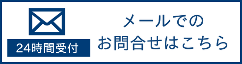

サービス紹介
こんなことでお悩みではありませんか？

42年の実績
代表税理士の秋山は、『税務調査官』としての４０年の実績から、相続・贈与を熟知しております。お気軽にどんなお悩みでもご相談下さい
豊富な知識
お客様に対し、様々な節税方法や特例の利用をご提案した上で、一人一人に合った最適な申告・節税アドバイスを実行させて頂きます
相談しやすい環境
- 姫路市役所から徒歩1分
- 土日祝日も営業
- 初回相談【無料】
- 初回以降の相談も【90分無料】
秋山税理士事務所の初回相談風景
こんな不安はありませんか？
総遺産額の概算
相続財産の評価を数多く行ってきた経験から、初回のヒアリング時において高い精度で、ご家族の総遺産額・相続税額のご提示が可能です
相続税が掛かるか
おおよその財産額の下、相続税が掛かるかの判断をその場で行い、相続税が掛かる場合にはその納税額の概算をお答え致します
当事務所への料金
当事務所へお支払いいただく料金は全て分かり易く料金表に記載しておりますので、初回相談時に料金額のご提示が可能です
こんなことでお困りではありませんか？
どんな手続きが必要？
相続税の申告に必要な手続きに関しては、代表税理士が初回相談時から申告完了までの期間に逐次ご説明させて頂きますので、ご安心ください
どんな物が相続財産？
税務調査官としての経験から適切なヒアリングを行い詳細な財産内容を解明しますので、財産の申告漏れの心配がございません
財産の分け方は？
数多くの相続争いを見てきた経験から、将来の二次相続を見据えて相続争いの起こらない最適な分割方法をアドバイス致します
相続の初回相談から申告書提出・納付までの流れ
相続税が掛かる方が亡くなれば、相続が発生した日から１０か月以内に、相続税の申告と納税を行う必要があります。
当事務所に相続税申告書作成をご依頼頂いた場合、初回のご相談から相続税申告書の提出までは平均２か月程となっておりますが、
申告期限が過ぎている、
間近に迫っている場合、
当事務所の料金表
初回相談無料！二回目以降の相談も90分以内無料！
遺産分割協議書の作成 5万円（税込み）
＋（※上記は相続人が２人までの場合の料金です。３人目から1人あたり上記金額より５％加算。）
（※遺産総額により申告書作成料が異なります。詳しくは料金案内ページをご確認下さい。）
＋相続税申告書作成をご依頼いただいた場合のお支払い例
私たちは、なぜお客様の悩みを解決できるのか。
秋山税理士事務所の
４つの強み
「元国税調査官」
代表の秋山は､大阪国税局・税務署・国税不服審判所などの専門機関で40年以上、主に相続税を取り扱う資産課税部門で働いており、相続税に関する豊富な知識と経験があります。
「相談実績5,000件以上」
現役時代に、相続税に関する相談を約5,000件受けてきた経験から、お客様のあらゆるお悩みに対して的確な解決策を提案できます。
「調査官目線で作る申告書」
税務調査官時代は、相続税の調査を約500件、調査対象にするか・しないかの判断を約20,000件行ってきました。
その経験から、税務調査を受けにくい申告書の作成が可能です。
「調査立会もお任せください」
元調査官としての経験・税理士としての経験をもとに、税務調査を受けた場合でも、お客様の時間面での負担・精神面での負担・税金面での負担を最小限に抑えることが可能です。
秋山税理士事務所と他事務所との比較
相続税の申告における 知識と経験
相続税申告における お客様ニーズへの対応力
当事務所にご依頼を頂いたお客様の声

メディア情報
当事務所代表の秋山は、税務調査官時代に体験した出来事を纏めた自著「間違いだらけの相続税対策」の出版をはじめ、雑誌・WEBメディアなど数々の取材を受けております。


間違いだらけの相続税対策

発売日 ： 平成28年3月3日 発売
著者 ： 秋山清成
出版社 ： （株）中央経済社
当事務所代表の秋山が、税務調査官時代に体験した数多くの事例の中から、
- 特に記憶に残っているもの、
- 皆様にこのようなところに気を付けていただきたいと思っていたもの、
- 節税の仕方、
- 相続争いの内容、
是非一度お手に取って頂ければ幸いです。 Amazonでのご購入はこちら
相続・贈与に関するお役立ち情報を記事で紹介
秋山税理士事務所では
相続税の基礎知識やお得な節税情報
将来の相続税節約の為の贈与の知識や
贈与税を0円にする生前贈与の方法
元税務調査官が解説する調査の手法
調査に選ばれない為の申告書の書き方など、
沢山のお役立ち情報を投稿しておりますので、
是非ご覧になって頂けると幸いです。
相続・贈与に関するお役立ち情報を動画で紹介
秋山税理士事務所では
相続・贈与の
税務調査官視点から見た
毎週土曜日19時から
Youtubeにて投稿しております。
（現在登録者4万人）
是非チャンネル登録をして動画を待って頂けると幸いです。
相続・贈与のお悩み全国どこでも自宅にいながら解決します
SRS（相続 遠隔サービス）とは、
- 専門家の事務所を訪問しなくても
- 車やバスなどの移動手段を確保しなくても
- 自宅にいながらにして
あなたが抱える相続・贈与のお悩みや、
揉めない為のスムーズな遺産分割、
相続税申告書の作成、提出などを、
パソコン1台で全て解決させて頂くサービスです。
よくある質問
- 家族の遺産に対して相続税が掛かるかどうかが判断出来ません、どうすればよいでしょう？
- 相続税と贈与税、税金面で得なのはどちらですか？
- 我が家には大した資産はありません。 そんな家庭には遺言書の作成は必要無いでしょうか？
等の、皆様が相続・贈与で感じる不安や疑問をQ&A方式でお答えしております。
相続の一般的な流れ
相続税の基礎控除を超える財産がある方が亡くなられた場合、相続税の申告期限は亡くなられた日から10ケ月以内>にしなければいけません。
葬儀やその後の後始末をしていたら10ケ月はあっという間に過ぎてしまいます。
あなたは今から何をしないといけないのか、是非ご自身の状況をチェックしてみて下さい。
＼まずは一度ご相談下さい！／
まずは一度ご相談下さい！
079-280-4749
電話受付：8:00～18:00
営業日：火曜日～日曜日 (月曜定休日) ※祝日の場合は営業
カテゴリー
- 【相続】円満な相続方法 (3)
- 【相続】相続トラブルの実例 (3)
- 【相続】基礎知識・手続き (15)
- 【相続】得する相続・損する相続 (19)
- 【相続】認知症への備え (3)
- 【税務調査】基礎知識 (7)
- 【税務調査】士業向け (7)
- 【税務調査】相続人向け (12)
- 【贈与】基礎知識・手続き (12)
- 【贈与】得する贈与・損する贈与 (9)
- 【贈与】贈与の失敗例 (4)
- サービス紹介 (2)
- メディア情報 (12)
- 料金案内 (5)
- 未分類 (8)
- 相続・贈与コラム (24)
- 相続税の基礎知識 (12)
- 秋山 清成
- 国税OBがタンス預金をオススメしない5つの理由
- 【国税OBが語る】過去の贈与を徹底追跡！税務調査官は亡くなった方や相続人の通帳のココを見ます！
- 贈与税の無申告が税務署にバレる５つのパターン！
- 【相続×預金】相続の相談の際によく聞かれる『預金』に関する疑問5選
- 何もしなければ親の財産は相続が3代続けばなくなる!?生前から出来る節税対策を解説します！
秋山税理士事務所のソーシャル一覧
<Tweets by kiyo_souzoku >